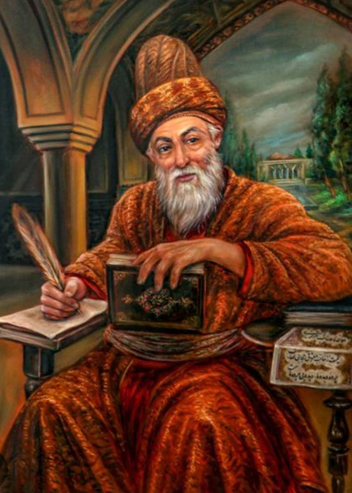

میرزا محمدعلی، متخلّص به «صائب» و مشهور به «صائب تبریزی»، از بزرگترین غزلسرایان سدهٔ یازدهم هجری و چهرهٔ شاخصِ سبک هندی است. دربارهٔ سال و محل تولّد او در منابع اختلاف است؛ اما غالب گزارشها تولّد را در اوایل سدهٔ یازدهم هجری و پیوند خانوادگی او را با تبریز و اصفهان یاد کردهاند. صائب پس از بالندگی ادبی، سفرهای دور (از جمله حج و سپس عزیمت به هند) را تجربه کرد و مدّتی در قلمرو گورکانیان، بهویژه در روزگار شاهجهان، به سرودن و معاشرت با اهل ادب پرداخت. او سپس به اصفهان بازگشت و در عهد صفوی، به سبب شهرت و نفوذ ادبی، مورد توجه قرار گرفت. دیوان صائب بسیار پرحجم است و علاوه بر غزلها، آثاری مانند «قندهارنامه» نیز به او منسوب شده است. از ویژگیهای برجستهٔ شعر او میتوان به «معنیآفرینی»، تمثیل و تصویرسازیهای بدیع، نکتهپردازی در تکبیتها و گسترش ظرفیتهای غزل اشاره کرد. وفات او را عموماً در دههٔ ۱۰۸۰ هجری دانستهاند و آرامگاهش در اصفهان (محلهٔ لنبان/تکیهٔ صائب) قرار داردصائب از شاعران سبک هندی است. در شعر او تمثیل، لطافت اندیشه، و کاربرد صور خیال دیده می شود. غزل را در هر موضوعی به کار برده است.